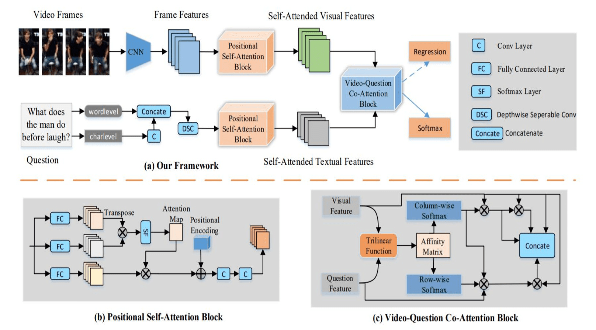
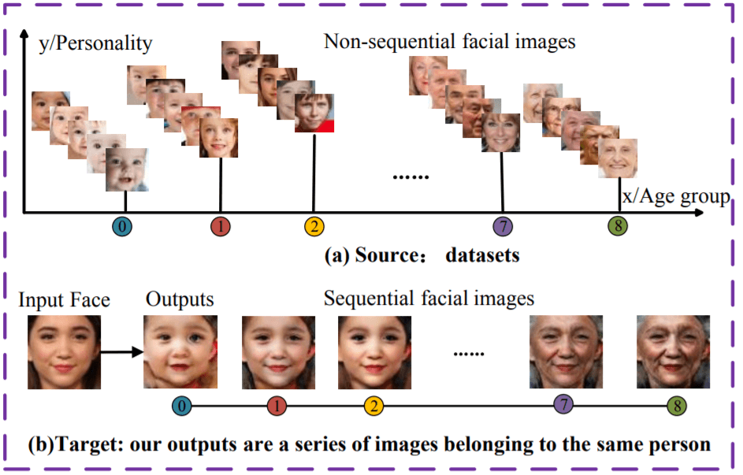
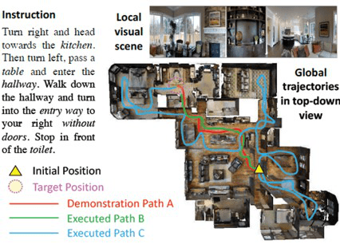
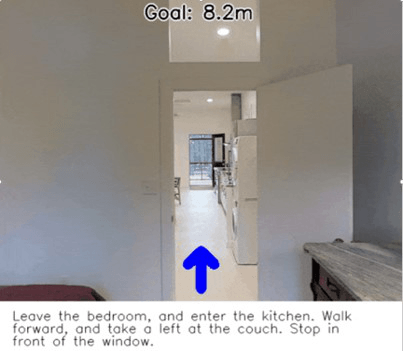
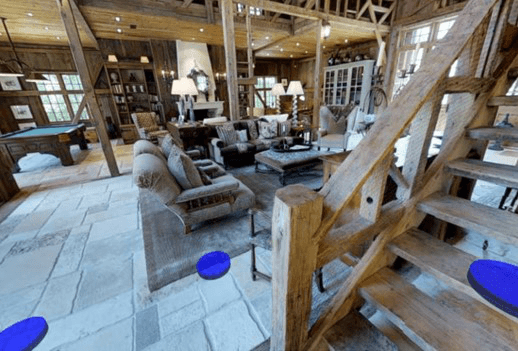
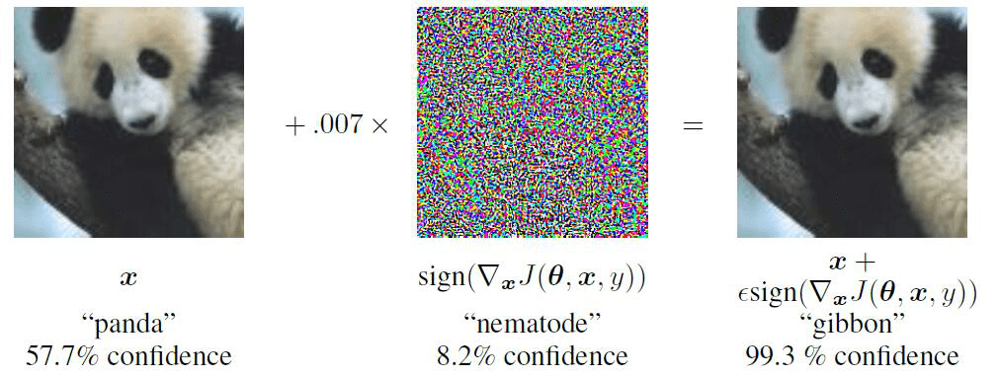

Research
Parts of our achievements
Visual Question Answering
Visual Question Answering is that given an image or a video and a related question, the proposed algorithm can answer the question correctly based on the visual information. Most existing methods are mainly based on recurrent neural networks (RNNs) with attention. But they are time-consuming and having difficulties in modeling long range dependencies due to the sequential nature of RNNs.

To tackle this issue, we propose a new architecture, Positional Self-Attention with Co-Attention (PSAC), which does not require RNNs for video question answering. The proposed Positional Self-Attention Block can calculate the response at each position by attending to all positions within the same sequence and then add representations of absolute positions. Therefore, PSAC can exploit the global dependencies of question and temporal information in the video and make the process of question and video encoding executed in parallel.
This paper is accepted as an oral paper by AAAI-2019.Face Aging
Face aging and rejuvenation aims to predict the face of a person at different ages. While tremendous progresses have been made in this topic, there are two central problems remaining largely unsolved:

To tackle these issues, we develop a novel dual conditional GANs (AgeGAN) mechanism, which enables face aging and rejuvenation to be trained from multiple sets of unlabeled face images with different ages. In our architecture, the primal conditional GAN transforms a face image to other ages based on the age condition, while the dual conditional GAN learns to invert the task. Hence a loss function that accounts for the reconstruction error of images can preserve the personal identity, while the discriminators on the generated images learn the transition patterns (e.g., the shape and texture changes between age groups) and guide the generation of age-specific photo-realistic faces.
We further improve our networks, termed AgeGAN++, in which we share the weights between the primal part and the dual part to ensure a more stable training process. Moreover, in order to get more sensible results, a representation disentanglement component is integrated with the latent facial representation, and a novel enhanced discriminator is applied on the generated images of AgeGAN++. Experimental results on two public datasets demonstrate the appealing performance of the proposed methods by comparing with the state-of-the-art methods.
Image retrival
Our research interests are in hashing and quantization methods for fast image retrieval.

The figure shows our Deep Recurrent Quantization (DRQ) model which is trained once and can generate sequential binary codes. It is the first to combine recurrent network and quantization, which significantly reduces the codebook size. The code length can be easily controlled by adjusting the number of recurrent iterations. Experimental results on the benchark datasets show that our model achieves comparable or even better performance compared with the state-of-the-arts for image retrieval. But it requires much less number of parameters and training times. This work is accepted as a conference paper in IJCAI-19. [Paper link]. [Source code].
Other works:Exploring
Video object segmentation
Video Object Segmentation is a task that separating a foreground object from a video sequence. We focus on semi-supervised VOS in which the ground truth segmentation masks of one or multiple objects are given for the first frame in a video. VOS is a fundamental task in computer vision, with important applications including video editing, robotics, and self-driving cars.

Visual-and-language Navigation
VLN requires an embodied agent to follow natural language instructions to navigate from a starting pose to a goal location in the Matterport3D Simulator(a new large-scale visual RL simulation environment).
|  |  |  |
Adversarial Attack

Recent studies show that deep neural network are vulnerable to adversarial attacks in the form of subtle
perturbations to inputs that lead a model to predict incorrect outputs. In the picture left, we can't see any
difference between two images, but DNN really fail. For our group, It's really intersting to understand why it
will happen. There are also many other intersting application, explore it and make fun!
If you are interested in this area, welcome to follow our work Patch-wise Attack for Fooling Deep Neural Network (accepted by ECCV2020).